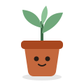

A character on your desktop
It walks in for each notification or stays on screen. Pick one of 10 original built-in characters, or load your own .glb or .vrm model.
A private desktop companion for remote developers and team leads. A little 3D character lives in the corner of your screen and brings every reminder: when to start and stop, meetings, water, stretches and focus time. Your work log stays in plain files on your computer.
Features
Reminders that respect your focus, a log you own, and AI only if you want it.
It walks in for each notification or stays on screen. Pick one of 10 original built-in characters, or load your own .glb or .vrm model.
Alerts when your workday begins and ends, with gentle escalation at +30 and +60 minutes if you keep working after hours.
Optional, read-only Google Calendar. Get an alert before each meeting with a Join button, and a prompt to note any outcome when it ends.
Friendly nudges to drink water and move. They never interrupt a meeting or a focus block.
Start a focus block and low-priority nudges wait until you are done.
One file per day, with full-text search. Quick capture from anywhere with Ctrl+Shift+Space (Cmd+Shift+Space on macOS).
Draft your standup, ask questions about your log, or summarize a date range, using the provider and key you choose.
Your own work reminders: once, daily, or every N minutes. One bubble at a time, and meeting alerts still come through in Do Not Disturb.
No servers, no accounts, no analytics. Secrets are kept in your operating system’s keychain.
How it works
Download the installer for Windows, macOS or Linux. There is no account to create.
Choose your work hours, a character and which reminders you want. Connect Google Calendar only if you like.
Your companion brings reminders one at a time and keeps quiet while you focus. Jot notes into your log as you go.
One bubble at a time
Every notification joins a single queue with a priority. Your companion shows the most important one first, then the next, so you are never buried in pop-ups.
Meeting alerts are urgent and come through even in Do Not Disturb. Water and stretch breaks wait until a meeting or focus block is over.
Illustration of the queue. In the app, each bubble waits for you to respond or dismiss it.
Private by design
Work Companion has no servers and no accounts. ChaiStack never receives your data.
You can use Work Companion without a Google account. If you choose to connect Google Calendar, Work Companion requests read-only access to your calendar (the calendar.readonly scope) and uses it only to:
Work Companion never creates, changes or deletes anything in your calendar. Event data is read directly from Google to your computer and is not sent to ChaiStack. You can disconnect at any time in the app’s settings or from your Google Account permissions.
Optional AI
AI is off until you turn it on. Use it to draft a standup, ask your log a question, or summarize a range of days. Requests go straight from your computer to the provider you pick.
Pick your companion
Every built-in character has its own little quirks. Prefer something else? Load any .glb or .vrm model you have the rights to use.
 Robot
Robot Cat
Cat Owl
Owl Mug
Mug
PlantIllustrations are flat drawings; in the app the characters are animated 3D models.
FAQ
Yes. It is free and open-source software under the MIT License. There are no paid tiers, ads or tracking. If you turn on AI, your provider may charge you for its usage under its own terms.
No. There is no Work Companion account. Google sign-in is only needed if you want calendar alerts, and AI sign-in only if you choose a provider that needs it.
With your permission it reads your calendar (read-only) to show today’s events, alert you before meetings and ask for a note when they end. It never changes your calendar. See the Privacy policy.
On your computer, as one markdown file per day. You can open, edit, back up or delete the files with any text editor.
No. Water and stretch reminders never interrupt a meeting or a focus block, and only one bubble shows at a time.
Windows 10 and 11 (x64), macOS (universal, Apple silicon and Intel) and Linux x64 (AppImage, .deb or .tar.gz). See Download.
The character’s animation slows to a low frame rate when idle and stops completely when it is hidden.
Free for Windows, macOS and Linux. No account, no tracking.